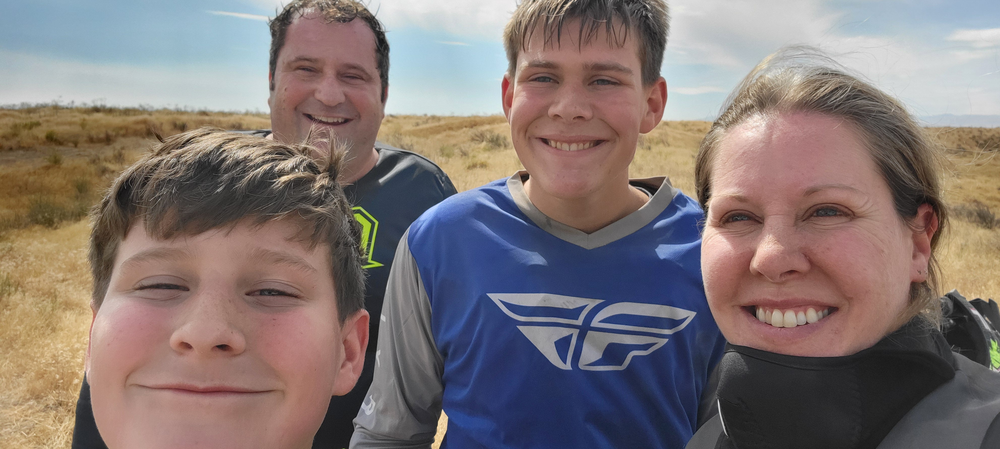
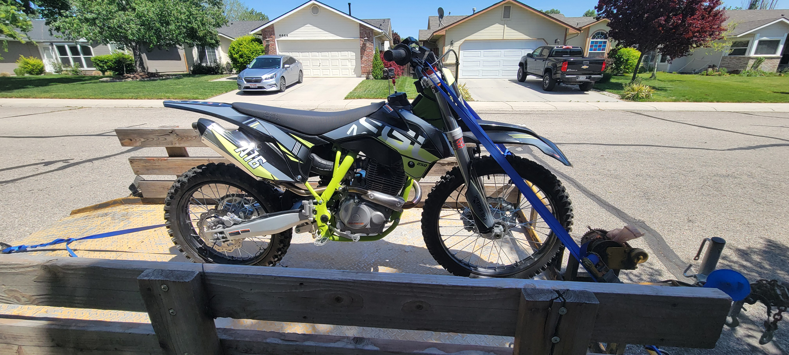

About the Author
As a passionate dirt bike enthusiast with over 4 years of experience riding and repairing, I'm here to share my knowledge and help you conquer the dirt track or trail with confidence.


Website pourpous
This website is your one-stop shop for understanding and mastering the world of dirt bikes. Dive into the history of these thrilling machines, learn the essential steps to get started on your off-road journey, and pick up valuable tips for maintaining and fixing your dirt bike.